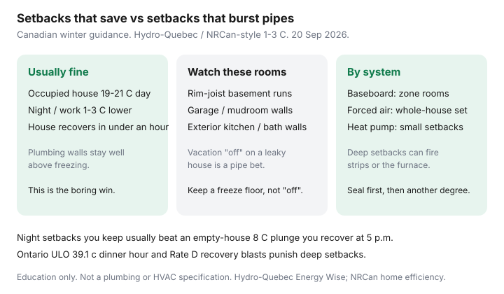

Utilities · Canada
Winter Thermostat Setbacks in Canada: How Low Can You Go Without Risking Pipes?
Canadians either freeze the house at 16°C all January or refuse any setback after one Facebook burst-pipe story. Both are expensive. A modest setback you will keep usually saves fuel. An 8°C plunge in a leaky bungalow can cost more in recovery kWh or GJ — and it can ice a rim-joist supply line you never think about until the ceiling stains.
This is cold-climate guidance tied to heat-system type. Seal first with DIY air sealing. If you are shopping a gadget, run smart thermostat math. Baseboard households should keep the baseboard playbook open.
Disclosure: Smart thermostats are an offer type that can hold a setback you will actually keep. Saving Optimizer may earn a commission if we later add partner links. We do not currently claim thermostat-brand or utility partnerships. This is education — not a plumbing or HVAC specification.
Key takeaways
- For an occupied Canadian house, 1–3°C night or work-day setbacks are the usual Hydro-Québec / NRCan-style range — if the house recovers without a two-hour blast.
- Pipe-freeze risk lives in basements, garages, crawlspaces, and exterior-wall plumbing, not in the living-room thermostat. Keep a freeze floor (often mid-teens °C in those zones), not “off.”
- Baseboards can zone room by room. Forced air is a whole-house setpoint. Heat pumps punish deep setbacks if recovery fires strips or a lockout furnace.
- A setback you run every night usually beats one heroic empty-house plunge you recover at Ontario’s 39.1 ¢ ULO dinner hour or on Rate D’s second tier.
- If the hatch whistles, another degree of setback is the wrong project. Air sealing and attic R-value beat a colder living room.
Comfort vs cost: realistic setback ranges for occupied homes
Hydro-Québec Energy Wise and NRCan-style home-efficiency guidance still support modest setbacks — on the order of 1–3°C when the house is asleep or empty — if the house can recover without a two-hour blast. Deep 8°C setbacks in a leaky plex can cost more in recovery energy than they save, and they ice the interior of single-pane rooms.
A boring occupied setpoint you can live with (often 19–21°C) plus a night drop you do not override every evening beats a 16°C “savings” week that ends with space heaters. Hydro-Québec’s electronic-versus-dial note (~10% of annual heating cost) is about holding a number, not about how cold you can stand it.

Pipe-freeze risk zones: basements, garages, exterior walls
Pipes burst where they see outdoor air, not where you sit. Walk the house before you program a vacation “away”:
- Rim joist and basement — supply lines along the band joist, laundry tubs on an exterior wall, a bathroom above an unheated crawl.
- Garage and mudroom — a hose bib, a laundry pair, or a bathroom sharing the garage wall.
- Kitchen and bath exterior walls — the sink that sweats in January is telling you the cavity is cold.
- Vacation “off” — a leaky house at 10°C with a polar snap is a bet. Cabin and cottage forums are full of this story. Hold a freeze floor and drain what you can if you are leaving for weeks.
If you zone a guest room down, confirm there is no wet wall in that room. 15–16°C with the door closed is a common occupied-home compromise — not a specification. Ice on the interior of glass is a stop sign.
Electric baseboard vs forced-air vs heat-pump behaviour differences
| System | How a setback works | Watch-out |
|---|---|---|
| Electric baseboard | Each room has its own stat. Close the door; drop unused rooms. | Line-voltage stats only. Do not “off” a plumbing wall. Rate D second tier (11.142 ¢ from 1 Apr 2026) and Ontario ULO 39.1 ¢ punish 5 p.m. recovery. |
| Forced-air furnace | One (or a few) setpoints for the duct system. | Closing vents is not zoning. A dirty filter plus a deep setback is a short-cycle and comfort complaint. |
| Heat pump / hybrid | Smaller setbacks. The compressor likes steady work. | Deep setbacks can fire aux strips (COP 1) or a conservative furnace lockout. Ask what recovery does at −15°C. |
Smart schedule patterns for work-from-home vs empty-house days
Work-from-home is not an empty house. Heat the room you sit in; do not heat the guest room to 21°C for a Zoom call. A geofence that drops the whole house when you walk the dog is a feature that can ice a rim joist if you also “saved” the basement.
Empty weekdays: a modest daytime setback plus a start-recovery that finishes before Ontario’s winter 5–7 p.m. TOU on-peak (20.3 ¢) or ULO’s 4–9 p.m. 39.1 ¢ block (OEB RPP 1 Nov 2025–31 Oct 2026). Québec Flex D event energy is 46.463 ¢/kWh — do not schedule a blast into an announced peak.
Night setbacks vs all-day setbacks — what usually saves more
Hours matter. Eight hours at −2°C every night, 365 heating-season nights, is a lot of degree-hours you did not buy. One Saturday at −8°C while you ski, recovered at 5 p.m. with strips or Rate D second-tier kWh, is a story, not a strategy.
If you are gone 9–5 five days a week and the house recovers in 30–45 minutes, a daytime setback plus a night setback is the usual stack. If recovery takes two hours and the house is leaky, flatten the schedule and spend the Saturday on weatherstrip.
When insulation and air sealing beat another degree of setback
A colder living room does not fix an attic hatch that is a picture frame. NRCan attic targets still run from about R-45 to R-80 by climate zone. Southern Ontario often sits near Zone 6 (R-60). Seal bypasses before bags — attic guidance and upgrade order.
If you already live at 19°C and the pipes are the worry, stop turning the dial. Buy gaskets, a door sweep, and a basement rim-joist afternoon. Another degree is how people write the burst-pipe post.
Sources & date stamps
- Hydro-Québec Energy Wise — reducing electricity consumption; electronic vs dial ~10%; modest recoverable setbacks (used 20 Sep 2026).
- NRCan home energy-efficiency / Keeping the Heat In context — envelope first; attic R-value by zone.
- OEB RPP commodity 1 Nov 2025–31 Oct 2026 — TOU on-peak 20.3 ¢; ULO weekday 4–9 p.m. 39.1 ¢ (recovery-hour trap).
- Hydro-Québec Rate D / Flex D (1 Apr 2026) — second tier 11.142 ¢; Flex D event 46.463 ¢/kWh.
- Community patterns on r/PersonalFinanceCanada — directional, not a survey.
Frequently asked questions
How low can I set the house overnight?
For an occupied, reasonably sealed house, 1–3°C below the daytime number is the usual Canadian guidance — if it recovers without a long blast and plumbing walls stay well above freezing. There is no national “safe °C” for every bungalow.
Will a deep setback freeze my pipes?
It can, if pipes run in a garage wall, rim joist, or unused exterior bathroom you also turned “off.” The living-room thermostat is a poor freeze sensor.
Do heat pumps like big setbacks?
Usually no. Deep setbacks can call expensive backup heat. Smaller, steadier setbacks are the typical cold-climate advice. Ask what recovery does at −15°C.
Is a smart thermostat required?
No. A programmable you actually use captures most of the schedule. Smart is worth more for remote vacation floors, heat-pump lockouts, or a demand-response program.
What if I work from home?
Do not treat the house as empty. Zone unused rooms. Keep the office comfortable. Skip heroic whole-house plunges you recover at 5 p.m.